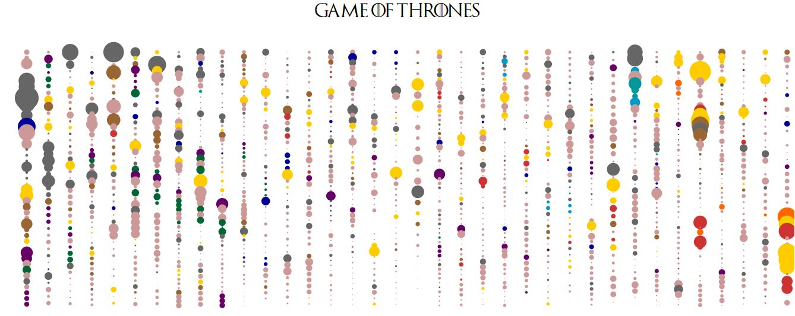

Javier Sanchez
Data visualization portfolio
Start scrolling
Data Visualization Stories
Cinema story of San Francisco
Data Report adressing the state of freelancing in France. Made for Malt (largest freelancing platform of France)
Raw Vizs Animated poster of Netflix film Roma. Test of D3's capabilities to manipulate DOM elements. Made with D3 and Photoshop.
Animated poster of Netflix film Roma. Test of D3's capabilities to manipulate DOM elements. Made with D3 and Photoshop. Area chart intended to monitor medical conditions. Every condition has a different number of patients threshold. Above it, the condition is considered viral.
Area chart intended to monitor medical conditions. Every condition has a different number of patients threshold. Above it, the condition is considered viral. Heat Map of a refugee camp. Made to monitor where patients that checked in the clinics came from. Made with D3 and Inkscape.
Heat Map of a refugee camp. Made to monitor where patients that checked in the clinics came from. Made with D3 and Inkscape.  Chord graph representing the different stages in which patients stay in a clinic. Intended to monitor the flow of patiens in a hospital. Made with D3
Chord graph representing the different stages in which patients stay in a clinic. Intended to monitor the flow of patiens in a hospital. Made with D3
Animated poster of Netflix film Roma. Test of D3's capabilities to manipulate DOM elements. Made with D3 and Photoshop.Visualizing the 8 seasons of Game of Thrones. Made with D3 for a Webinar.

BIO or How I reach the world of Data Viz.
I have worked in a several IT companies where I have translated business needs into technical specifications and created solutions through analytics.I dived into the Data Visualization world while working in my previous company (healthcare SaaS) as a Data Scientist. Since then, I have specialized into Javascript visualization and I have extensively used D3.js & other Javascript libraries (echarts.js,chart.js...). My data visualizations have been successfully used both for software integration, branding & business presentations.
I am passionate about technological innovation & communicating results to different audiences. I would love to keep applying my knowledge on topics I am passionate about:IT, social behavior, health, media & entertainment, humanitarian causes & education.
Aside from Data Viz, my interests include filmmaking & photography. If you want to see my Photo portofolio KEEP SCROLLING!